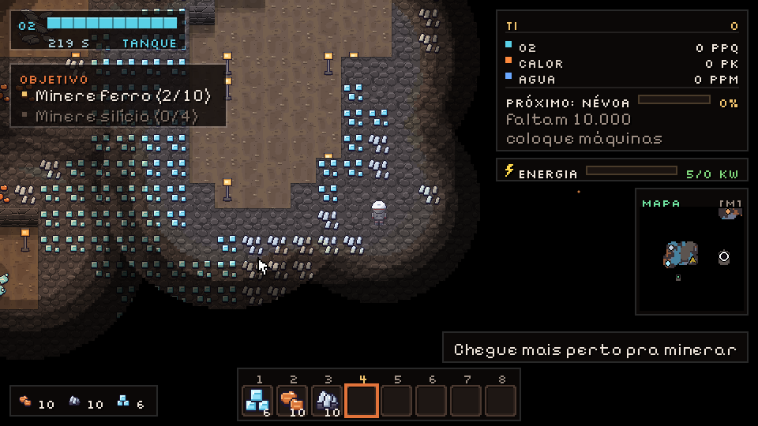
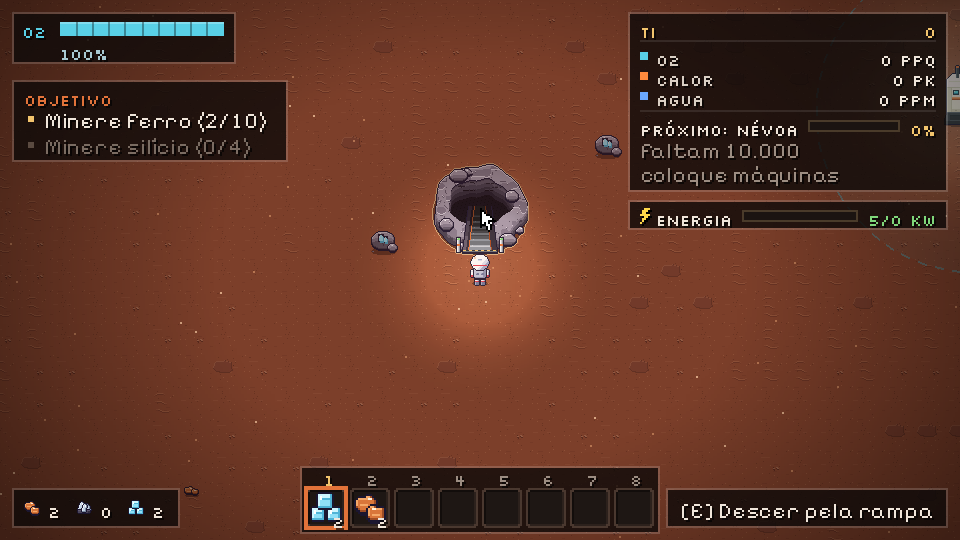
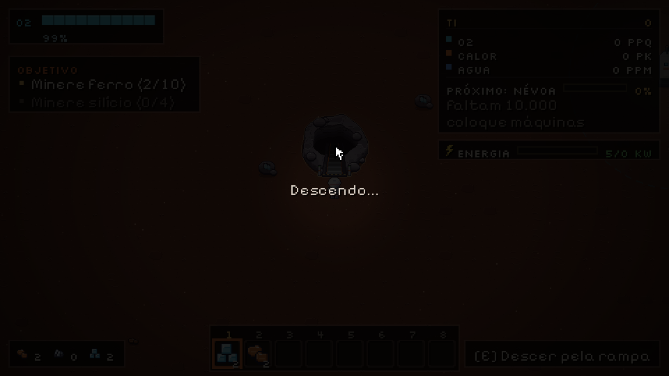
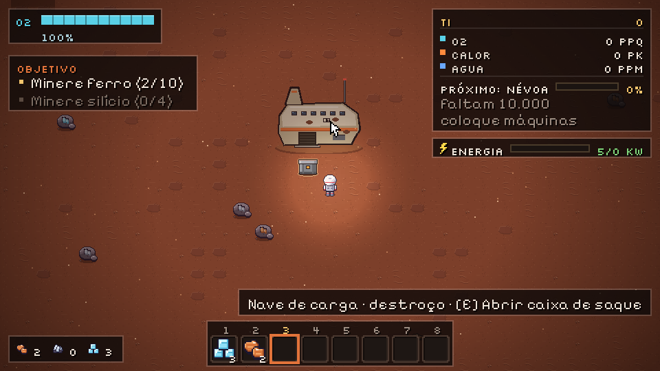
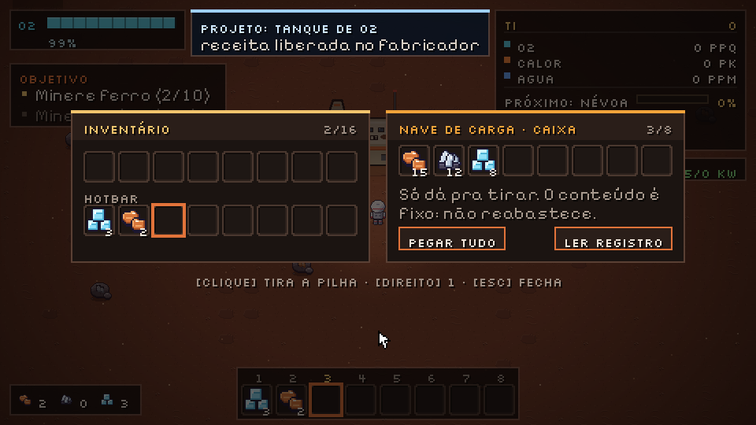
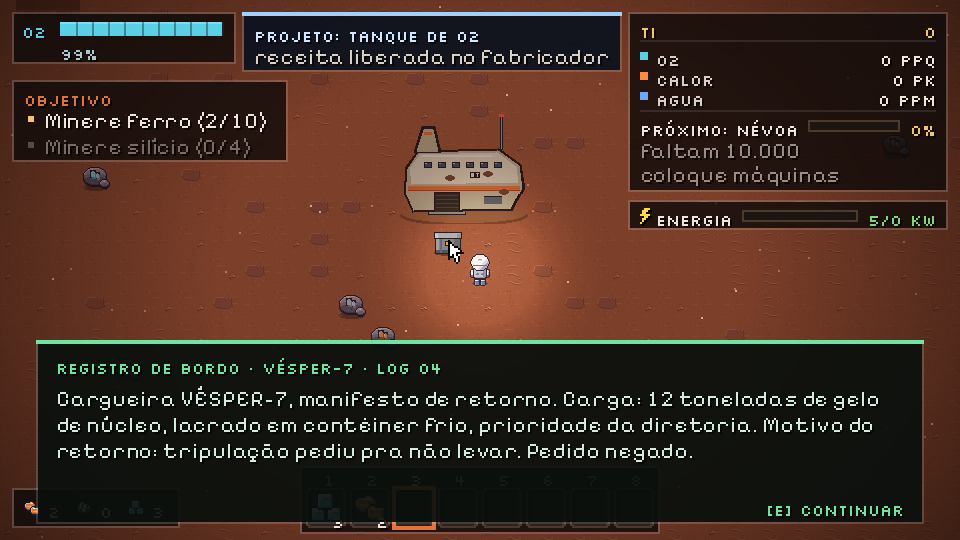
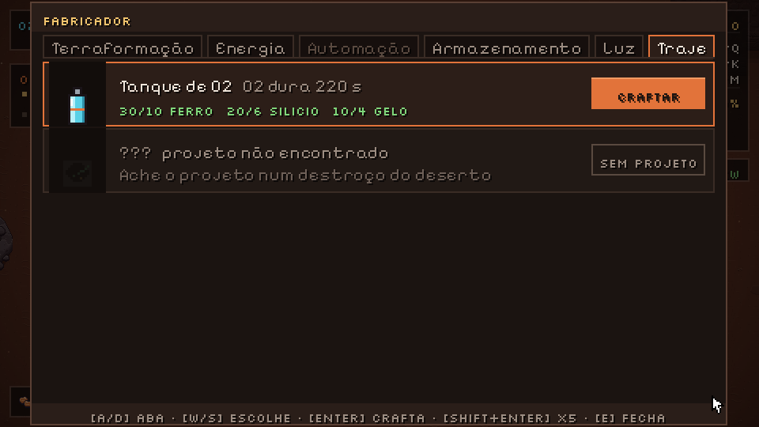
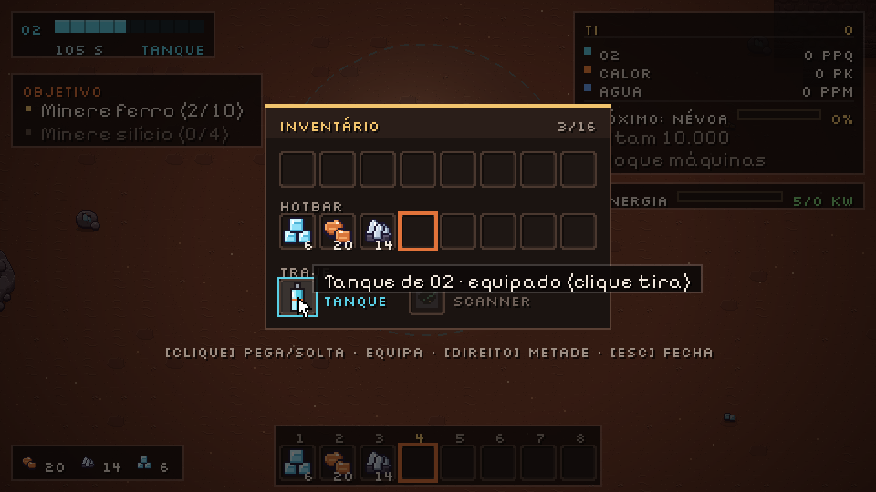
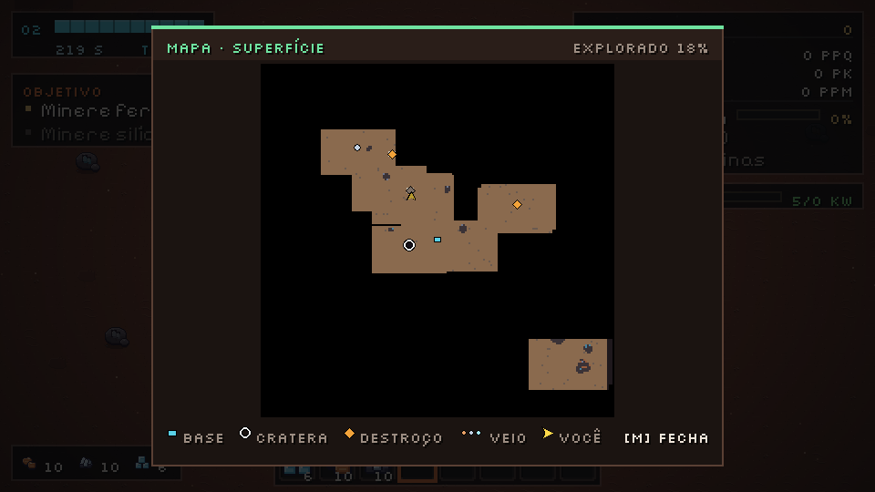

Hesper · revisão do v0.3
O que a equipe fez enquanto tu tava fora, e o que precisa da tua resposta. Responde no chat pelo número (ex.: "1 ok, 4 muda pra X").
O que ficou pronto
feitoMarco 2 · Caverna. A cratera virou rampa (E com o mouse em cima). A caverna é escura, com luz em degraus. Tem lanterna do capacete, luminária (1 Fe + 1 Si, sem energia), brilho fraco nos minérios e luz na boca da rampa. Lá embaixo a drill funciona, mas os drones não descem.
feitoMarco 3 · Destroços. 6 a 8 destroços no deserto, cada vez mais longe: nave de carga, módulo da colônia e sonda.
- Caixa de saque, só pra tirar.
- Projetos que liberam receitas.
- LOGs 04–07.
- Tanque de O₂: 100 → 220 s.
- Scanner: o minimapa só aparece com ele equipado, e M abre o mapa grande com névoa de guerra. O jogo já marca o que tu viu desde o começo, então ao equipar o scanner o mapa aparece completo.
feitoBug corrigido: uns pontinhos brancos no breu da caverna pareciam céu estrelado. Eram brilhos de silício e gelo quase brancos; agora o brilho é mais saturado e só aparece em minério exposto.
feitoPolimento:
- Os morros ficaram mais orgânicos, em formato de blob. Ainda aparece degrau de tile, porque a arte da parede é quadrada.
- No mapa, cada marcador tem forma e cor próprias:
- tu: seta amarela;
- rampa: anel branco;
- destroço: losango laranja;
- veio: ponto na cor do minério;
- terminal: verde;
- base: ciano.
- A tela de Controles cabe em qualquer tamanho; quando precisa, vira 2 páginas.
- Salvar no meio da rampa agora funciona.
- Consertei 7 textos que se encavalavam: aviso de projeto, "Jogo salvo", ajuda das Opções, seta do O₂ e textos flutuantes.
atençãoOs morros mudaram, então o mapa da seed mudou: cratera, veios e destroços estão em outros lugares. Começa um Novo jogo pro playtest, porque o save atual pode ficar estranho, com máquina dentro de morro.
498 testes passando. Desempenho: ~5 ms por frame na caverna com 36 luminárias, e o limite é 16,7 ms. Tudo commitado e no GitHub.
Aprovar arte e som
A · Arte v5.0: caverna e destroços
Luminária, rampa de subida, 3 destroços, caixa cheia e vazia, e os ícones de projeto, tanque e scanner. Hoje o jogo usa desenhos provisórios no lugar deles. Report completo: reports/design/index.html (v5.0 no topo).


B · Som v8: caverna e destroços
Os sons novos:
- ambiente da caverna: grave, com gotejar e eco;
- descer e subir a rampa;
- colocar luminária;
- abrir a caixa e achar projeto, um jingle curto;
- equipar e abrir o mapa.
Tem simulação de descer e subir com o crossfade de verdade. Report: reports/audio/index.html (v8 no topo).
Enquanto o som não é aprovado, a caverna toca o ambiente do estágio, sem o vento.
C · Texto dos LOGs 04–07
Rascunho meu, já dentro do jogo e fácil de trocar. Arquivo: docs/lore/logs_v03_rascunho.md.
| Log | Onde | Texto |
|---|---|---|
| 04 | Nave de carga (a mais perto) | "Cargueira VÉSPER-7, manifesto de retorno. Carga: 12 toneladas de gelo de núcleo, lacrado em contêiner frio, prioridade da diretoria. Motivo do retorno: tripulação pediu pra não levar. Pedido negado." |
| 05 | Módulo da colônia | "Dia 140. A Dra. Ilves colocou uma amostra do gelo do nível 2 no microscópio e ficou em silêncio a tarde inteira. À noite ela trancou o laboratório e levou a chave. Disse só: 'cresce quando ninguém olha'." |
| 06 | Sonda | "Sonda de mapeamento S-3. Leitura térmica anômala abaixo da cratera principal: o calor sobe sozinho, sem fonte conhecida. Recomendação automática: não perfurar. Status da recomendação: ignorada." |
| 07 | Módulo mais longe | "Dia 230. Última mensagem da Colônia Hesper. Desligamos os derretedores. Todos. Se alguém achar isto: o planeta não está morto. Ele está esperando. Não acorde o gelo." |
Decisões pra tu revisar
Os Devs tomaram essas decisões pra não travar o trabalho. Em cada uma eu digo se manteria.
- Aba nova "Luz" no fabricador pras luminárias. Pra caber a 5ª aba, as abas ficaram um pouco mais apertadas.
Eu: manteria. A luminária forte também fica nela.
- Ordem dos objetivos novos:
- Fabrique um baú
- Desça na caverna
- Coloque uma luminária
- Ache um destroço
- Ache o projeto do tanque
- Fabrique e equipe o tanque
Eu: manteria. O jogador desce cedo e sente que precisa do tanque. - Ordem dos destroços, do mais perto pro mais longe:
- Nave de carga: tanque e LOG 04
- Sonda
- Módulo: scanner e LOG 05
- Nave: luminária forte
- Sonda: LOG 06
- Mais 1 ou 2 extras, conforme a seed
- Módulo mais longe: LOG 07
Eu: manteria. - Registro de bordo: a nave e a sonda não têm terminal no desenho. Na primeira vez que tu abre a caixa delas, aparece o LOG na tela de terminal, e um botão "Ler registro" deixa reler.
Eu: manteria.
- O projeto entra sozinho no inventário quando tu abre a caixa. Os recursos ficam pra tu pegar.
Eu: manteria. O achado fica marcante, com som de conquista.
- O scanner é equipamento (slot próprio). Depois do projeto, a receita custa 4 Fe + 4 Si.
Eu: manteria.
- Clique esquerdo num tanque ou scanner equipa direto. Efeito colateral: com o esquerdo não dá pra arrastar esses itens pelo inventário. O direito ainda move.
Eu: manteria, mas quero tua sensação jogando.
- Luminária forte: raio 7, custo 2 Fe + 2 Si + 1 gelo. Ela não tem desenho próprio no contrato e hoje usa um provisório.
Eu: peço um sprite
lamp_t2pra Designer, se tu aprovar. - A drill nv.2 ficou fora do v0.3. Precisava de máquina nova com desenho, regras próprias, drones e save, então não era simples.
Eu: jogaria pro v0.4, junto com "drill melhor", que já tá lá.
- Quantidade de minério na caverna: ~47% das paredes têm minério (antes eram ~35%). No print abaixo a parede fica quase toda colorida, e acho que tá cheio demais visualmente.
Eu: baixaria pra ~38–40%, compensando com veios mais ricos. É número de economia, então não mexi sem ti.

- Simulador: o estilo de jogo "guloso" termina com ~10 min parado no fim numa seed, e com o mapa novo a estratégia casual da proposta deu 1h01 numa seed (27 min esperando). O limite do teste foi relaxado. Tu disse que tempo de partida não é foco agora.
Eu: deixaria pra quando a gente for balancear de verdade.
Prints pra dar uma olhada








Próximo passo
Tu aprova A, B e C e responde as decisões. Aí eu coloco a arte e o som aprovados no jogo, aplico o que tu mudar e abro o jogo pra tu jogar o v0.3 inteiro.
Se tiver tudo ok no teu playtest, fecho a tag v0.3. Biomas não foram mexidos, como tu pediu.